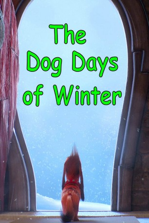

IMDB-Wertung: 6.1 / 10
IMDB-Wertung: 6.1 / 10  Metascore:
Metascore: 
Max braves the harsh winter weather and an uncooperative Who to bring a sick Grinch his favorite hot tea.
Alternativ: Dog Days of Winter, The (Originaltitel)
 IMDB-Wertung: 6.1 / 10 Metascore:
Max braves the harsh winter weather and an uncooperative Who to bring a sick Grinch his favorite hot tea.
Jahr: 2018
Dauer: 4 Minuten
FSK:
Land: USA Studio: NBCTonspuren: DD5.1 - ,
Untertitel: Deutsch, Englisch,
Auflösung: 1080p (1920x804) Größe: 329 MB
Genre: Komödie, Abenteuer, Animation/Trick, Familie, Kurzfilm
Regisseur: Habib Louati
Drehbuch: Josh Lieb
Soundtrack: Chad Cannon
Darsteller:
 John Kassir als Coffee Shop Manager
John Kassir als Coffee Shop ManagerDatei: X:\Kinder Collections\Grinch\Grinch - Hundstage im Winter (2018, FSK, 1920x804).mkv seit 08.04.2019
Festplatte: Kinder-Filme+Trick
 Es gibt insgesamt 7 Filme in der Gruppe 'Kinder Collections\Grinch'
Es gibt insgesamt 7 Filme in der Gruppe 'Kinder Collections\Grinch'